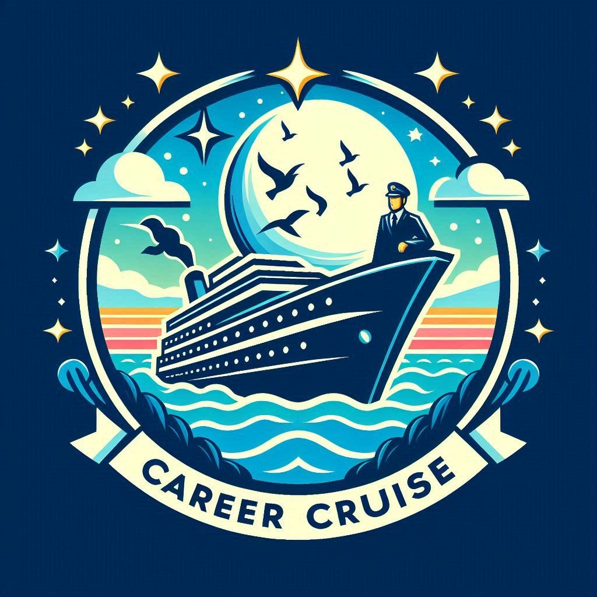

Explore Career Opportunities for Civil Engineering Graduates
Welcome to Civil Engineering graduates towards exciting and fulfilling career opportunities in the ever-evolving tech industry. As a ECE student, you're equipped with the knowledge and skills to navigate the digital landscape and drive innovation across various sectors.
Why Civil Engineering?
Civil Engineering plays a crucial role in society by addressing fundamental human needs, such as transportation, shelter, water supply, and environmental sustainability. Civil engineers are at the forefront of creating innovative solutions to complex challenges, ranging from urban development and infrastructure renewal to disaster resilience and environmental conservation.
Thriving Job Opportunities:
1. Construction Industry:
Civil Engineer: Manage construction projects from conception to completion, overseeing planning, design, budgeting, scheduling, and quality control.
Structural Engineer: Design and analyze structures such as buildings, bridges, dams, and tunnels to ensure they meet safety, durability, and performance requirements.
Construction Manager: Coordinate and supervise construction activities on-site, ensuring adherence to plans, specifications, and regulatory standards.
2. Transportation and Infrastructure:
Transportation Engineer: Plan, design, and manage transportation systems, including roads, highways, railways, airports, and public transit networks.
Traffic Engineer: Optimize traffic flow and safety through the design and implementation of traffic control systems, signals, and signage.
Urban Planner: Develop land use plans and zoning regulations to promote sustainable development, efficient use of space, and community livability.
3. Environmental Engineering and Sustainability:
Environmental Engineer: Assess and mitigate environmental impacts of engineering projects, such as pollution control, waste management, and water resource management.
Sustainability Consultant: Advise clients on sustainable building practices, green infrastructure design, and energy-efficient solutions to minimize environmental footprint.
4. Water Resources and Geotechnical Engineering:
Water Resources Engineer: Design and manage water supply, treatment, and distribution systems, as well as flood control measures and stormwater management facilities.
Geotechnical Engineer: Investigate soil and rock properties to assess stability and design foundations for structures, slopes, and earthworks.